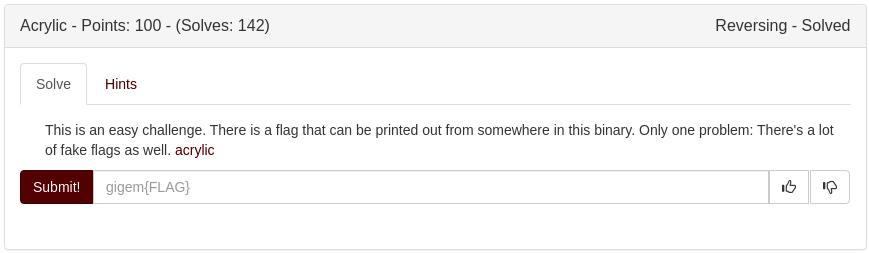
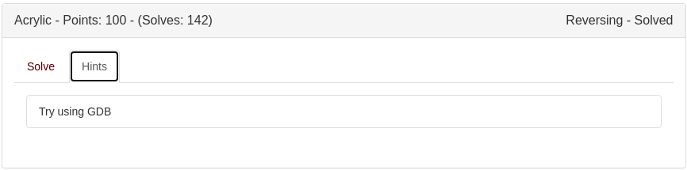

Original Github Link
Acrylic
Description


Solution
- Using cutter to decompile and disassemble, the
main()function onlyputssomething to the screen - Modify the binary to run the
get_flagfunction instead ofputs(I used cutter)
- You can use
objdumpto disassemble the binary and get the address ofget_flag, which is0x000000000000063a - Replace the address of
putsin themainfunction with that ofget_flag
- Use GDB and step through the entire function, just before it returns. Read the value of the flag in
rax(the location of the return value)
GDB log
(gdb) run
Starting program: /tmp/a
Breakpoint 1, 0x00005555554006b1 in main ()
(gdb) break *0x00005555554006a8
Breakpoint 2 at 0x5555554006a8
(gdb) continue
Continuing.
Breakpoint 2, 0x00005555554006a8 in get_flag ()
(gdb) info reg
rax 0x555555601020 93824992940064
rbx 0x5555554006d0 93824990840528
rcx 0x58 88
rdx 0x1600 5632
rsi 0x7fffffffe6f8 140737488348920
rdi 0x555555400754 93824990840660
rbp 0x7fffffffe5f0 0x7fffffffe5f0
rsp 0x7fffffffe5f0 0x7fffffffe5f0
r8 0x0 0
r9 0x7ffff7fdc070 140737353990256
r10 0x69682ac 110527148
r11 0x202 514
r12 0x555555400530 93824990840112
r13 0x0 0
r14 0x0 0
r15 0x0 0
rip 0x5555554006a8 0x5555554006a8 <get_flag+110>
eflags 0x206 [ PF IF ]
cs 0x33 51
ss 0x2b 43
ds 0x0 0
es 0x0 0
fs 0x0 0
gs 0x0 0
(gdb) x/32wx $rsp
0x7fffffffe5f0: 0xffffe600 0x00007fff 0x554006bd 0x00005555
0x7fffffffe600: 0x00000000 0x00000000 0xf7dfeb25 0x00007fff
0x7fffffffe610: 0xffffe6f8 0x00007fff 0xf7fca000 0x00000001
0x7fffffffe620: 0x554006ad 0x00005555 0xffffe9c9 0x00007fff
0x7fffffffe630: 0x554006d0 0x00005555 0xdcd1536c 0xe6c680c1
0x7fffffffe640: 0x55400530 0x00005555 0x00000000 0x00000000
0x7fffffffe650: 0x00000000 0x00000000 0x00000000 0x00000000
0x7fffffffe660: 0x10f1536c 0x19397f3e 0x0965536c 0x19396f7e
(gdb) x/32wx $rbp
0x7fffffffe5f0: 0xffffe600 0x00007fff 0x554006bd 0x00005555
0x7fffffffe600: 0x00000000 0x00000000 0xf7dfeb25 0x00007fff
0x7fffffffe610: 0xffffe6f8 0x00007fff 0xf7fca000 0x00000001
0x7fffffffe620: 0x554006ad 0x00005555 0xffffe9c9 0x00007fff
0x7fffffffe630: 0x554006d0 0x00005555 0xdcd1536c 0xe6c680c1
0x7fffffffe640: 0x55400530 0x00005555 0x00000000 0x00000000
0x7fffffffe650: 0x00000000 0x00000000 0x00000000 0x00000000
0x7fffffffe660: 0x10f1536c 0x19397f3e 0x0965536c 0x19396f7e
(gdb) x/s $rax
0x555555601020 <flags>: "gigem{cant_use_strings}"
(gdb) ni
0x00005555554006ab in get_flag ()
(gdb) x/s $rax
0x555555602620 <flags+5632>: "gigem{counteradvise_orbitoides}"
(gdb)
Flag
gigem{counteradvise_orbitoides}